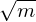
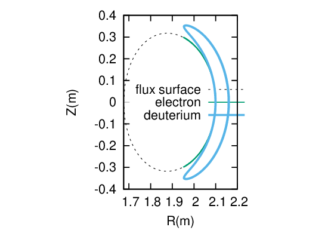
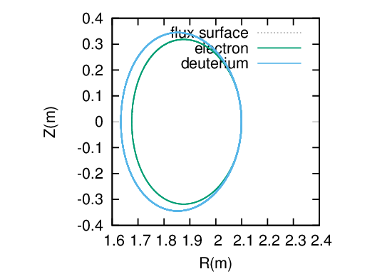

The gyroradius of a particle is given by r = mv∕BZe, which can be further written as
|
| (98) |
where 𝜀 is the kinetic energy of the particle. For an electron with the same kinetic energy of a ion, Eq. (98)
indicates that the gyroradius of the electron is smaller than that of the ion by the factor  . Now
comes the question: Is the width of the guiding center orbit of an electron with the same kinetic energy of
a ion smaller than that of the ion? Examine one of the constant of motion, Pϕ, which is given
by
. Now
comes the question: Is the width of the guiding center orbit of an electron with the same kinetic energy of
a ion smaller than that of the ion? Examine one of the constant of motion, Pϕ, which is given
by
|
| (99) |
The function g(Ψ)∕Ω is usually a weak function of Ψ, thus can be asssumed to be a contant. The orbit width can be characterised by ΔΨ, which is written
|
| (100) |
where Δv∥ is the variation range of v∥ in one poloidal period of the orbit. For trapped particles, this variation can be approximated as
|
| (101) |
Using this, Eq. (100) is written as
|
| (102) |
which indecates that, for the same temperature, ΔΨ is proportional to . (For circulationg ions, the variation of v∥ during one poloidal period can not be approximated by vt. Thus I do not know how to estimate the orbit width).
The variation of the poloidal flux ΔΨ can be approximated by
|
| (103) |
where Δr is the variation of the minor radius, Bp is the poloidal magnetic field. Using this in Eq. (102), we obtain
|
| (104) |
which indicates that the width of guiding-center orbits is inversely proportional to the poloidal magnetic field Bp, instead of the toroidal magnetic field Bt (first got to know this conclusion from J. Wession’s book “Science of JET”, and later wrote the above derivation). This explains why high plasma current is beneficial to the confinement of energetic particles (because high current corresponds to higher poloidal magnetic field Bp and smaller orbit width and thus better confinement of energetic particles which usually have larger orbit width than thermal particles).
A numerical example in Fig. 18 indicate, as expected, that the guiding center orbit width of an electron with the same kinetic energy of a ion is much smaller than that of the ion.
 